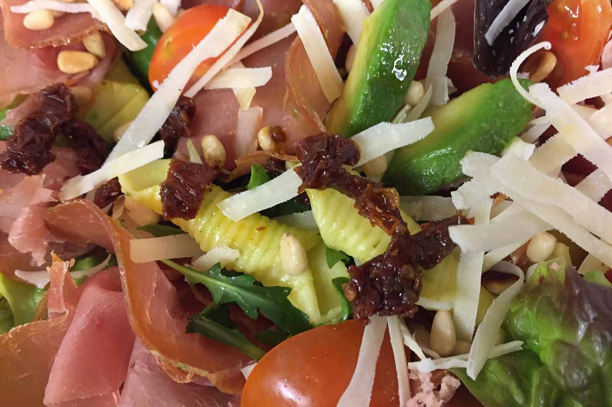

Spiseri & Landhandel
På Villa Mat og Mer får du servert fersk mat som vi har stått opp tidlig for å forberede.
Fra vårt spiseri ordnes det salater, blingser, foccacia og mange varianter av søte godsaker som lapper, boller og kaker.
Sommerens menyÅpningstider
| Mandag til fredag | 10:00 - 17:00 |
| Lørdag | 10:00 - 15:00 |
| Søndag | Nyter vi naturen |
Kjøkkenet stenger 30 minutter før døren lukkes.
Endringer i åpningstider i høytider og helligdager - sjekk vår Facebookside.
Catering
Vi vil gjerne lage mat til selskap, jubileum, firmasamling, møter eller vennetreff.
CateringLandhandel

På Villa Mat og Mer selger vi produkter fra lokale matprodusenter.
Vi har produkter til hverdags og fest, og gaver til enhver anledning.
Landhandel